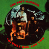
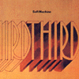
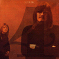
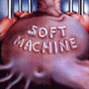
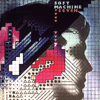
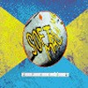
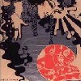
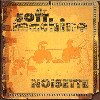
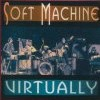

strange music page
canterbury music * * * soft machine
#Soft Machineは1968くらいから1976年くらいまで活動していた。いわゆるカンタベリーミュージックといわれる人たちの親玉バンドみたいなものです。
メンバーの入れ替わりも激しくて解散したときにはオリジナルメンバーは誰もいない状況でした。また、音楽性の変化も激しくて最初はサイケなポップスだったのが次第にH.Hopperの加入後はジャズに接近していってその後K.Jenkinsが入ったあたりからミニマルミュージックみたいな感じになり、最後はA.Holdsworthが加入したあとはフュージョンになっていました。
どの時期のものもそれなりのクオリティのアルバムなのですが、個人的には1枚目から4枚目くらいのサイケからジャズに移るあたりの雰囲気が好きです。
connect to soft machine
HULLODAR - soft machine
|
- soft machine
- soft machine (bootleg/unofficial)
|
#ソフトマシーンの記念すべき1枚目のアルバム。このアルバムからカンタベリーミュージックがはじまったようなもの、らしいです。いかにも60年代なサイケポップです。まだ変拍子とかのプログレ色は強くないですが、時代を感じさせる音は聞いていて楽しいです。David Allenは既に抜けていて、Kevin Ayersも2枚目が出る頃には脱退しています。

- Hope For Happiness
- Joy of A Toy
- Hope For Happiness (reprise)
- Why Am I So Short ?
- So Boot If At All
- A Certain Kind
- Save Yourself
- Priscilla
- Lullabye Letter
- We Did It Again
- Plus Belle Qu'une Poubelle
- Why Are We Sleeping ?
- Box 25/4 Lid
- Mike Ratledge (organ)
- Robert Wyatt (drums,vocals)
- Kevin Ayres (guitars,vocals)
#ソフトマシーンの2枚目、こんなにかっこいいアルバムなかなか無いと思います。サイケでポップでウネウネしていてます、しかもちょっとジャズっぽくなっています。カンタベリーミュージックの基礎中の基礎です。M.Ratledgeの時代を感じさせるオルガンの音が良いです。聴きましょう、というか聴け。

- Rivmic Melodies
- Pataphysical Introduction Pt.I
- A Concise British Alphabet Pt.I
- Hibou, Anemone and Bear
- A Concise British Alphabet Pt.II
- Hulloder
- Dada Was Here
- Thank You Pierrot Lanaire
- Have You Ever Bean Green ?
- Pataphysical Introduction Pt.II
- Out of Tunes
- As Long As He Lies Perfectly Still
- Dedicated to You But You Weren't Listening
- Fire Engine Passing with Bells Clanging
- Pig
- Orange Skin Food
- A Door Opens and Closes
- 10.30 Returns to The Bedroom
- Robert Wyatt (drums,vocals)
- Mike Ratledge (organs,piano)
- Hugh Hopper (bass)
#LPだと2枚組で全4曲の大作です。3曲めの"Moon in June"以外はインスト曲です。"2"でもその傾向はあったのですが、Soft Machineはこのアルバム以降は当時のフリージャズに接近していきます。ただ、このアルバムでは"4"や"5"ほどフリーにはならずに複雑な構成を持った音楽になっています。その中でも3曲目の"Moon in June"(名曲)は全体の構成から見ると異色な曲です、前半部分はほとんどR.Wyatt一人で録音したらしいです。この次のアルバムを最後にR.Wyattはぬけてしまいますがその指向の違いも少し感じます。個人的にはSoft Machineと言うとこのアルバムのイメージがあります。とても良いので聴きましょう。

- Facelift
- Slightly All The Time
- Moon in June
- Out-Bloody-Rageous
- Mike Ratledge (organ,piano)
- Hugh Hopper (bass)
- Robert Wyatt (drums,vocals)
- Elton Dean (alto sax,saxello)
- Rad Spall (violin)
- Lyn Dobson (flute,soprano sax)
- Nick Evans (trombone)
- Jimmy Hastings (flute,bass clarinet)
#4枚目ですが、このアルバムからボーカル曲はなくなってしまいジャズ一直線といった感じです(いわゆるジャズとはだいぶ違うようですが)。1曲めなんかは複雑な展開の曲で面白いです。このアルバムを最後にR.Wyattが脱退してしまいます。

- Teeth
- Kings and Queens
- Fletcher's Blemish
- Virtually Part 1
- Virtually Part 2
- Virtually Part 3
- Virtually Part 4
- Hugh Hopper (bass)
- Mike Ratledge (organ,piano)
- Robert Wyatt (drums)
- Elton Dean (alto sax,saxello)
- Roy Babbington (double bass)
- Mark Charig (cornet)
- Nick Evans (trombone)
- Jimmy Hastings (alto flute,bass clarinet)
- Alan Skidmore (tenor sax)
EPIC/SONY RECORDS: ESCA-5417 (original release 1971.2)
#アルバムのA面ではP.HowardでB面ではJ.Marshallという、変則的なアルバム。管楽器の人数が減りだいぶシャープな音になっています。過渡期といえば過渡期なのですが、Soft Machineもメンバーの入れ替わりが激しいのでどこが過渡期なのやらといった感じです。このアルバムはE.Deanの色が強い感じです、彼のソロアルバムとかに似ています。
- All White
- Drop
- M.C.
- As If
- L.B.O.
- Pigling Bland
- Bone
- Elton Dean (sax,saxello,electric piano)
- Hugh Hopper (bass)
- Mike Ratledge (organ,electric piano)
- Phil Howard (drums on 1-3.)
- John Marshall (drums on 4-6.)
- Roy Babbington (double bass on 4-6.)
EPIC/SONY RECORDS: ESCA-5418 (original release 1972.6)
#レコードでは2枚組み。片方がライブで、片方がスタジオといった内容です。Elton Deanが抜けて、Karl Jenkinsが加入しています。この交代は結構影響が大きかったようでライブの方の内容は前作までの流れに沿ったものですが、スタジオの方は妙なリフを繰り返しミニマルミュージックの影響を感じさせるものになっています。私は最初買ったときは余り良いとは思わなかったのですが、最近聞くと結構面白く感じます。

- Fanfare
- All White
- Between
- Riff
- 37 1/2
- Gesolreut
- E.P.V.
- Lefty
- Stumble
- 5 from 13 (For Phil Seamen with Love & Thanks)
- Riff II
- The Soft Weed Factor
- Stanley Stamps Gibbon Album (For B.O.)
- Chloe and The Pirates
- 1983
- Karl Jenkins (oboe,saxes,keyboards)
- Mike Ratledge (organ,electric piano)
- John Marshall (drums)
- Hugh Hopper (bass)
EPIC/SONY RECORDS: ESCA-5536 (original release 1973)
#遂にHugh Hopperまで脱退してしまいました。このアルバムは前作のミニマルな雰囲気を残しつつ1曲1曲はコンパクトにまとまっています。非常に洗練された感が強くて、当時クロスオーバーと呼ばれてた音に近いのではないかと思います。実際前作よりも全然聴きやすいです。
改めて聴くとK.Jenkinsとしてのソフトマシーンも色々な発見が有って面白いです、妙な浮遊感の有るキーボードのループの上にジャズともロックともなんか違うようなフレーズが乗っかる、変なジャズロック。
最近はアディエマスなんかやってるみたいですけど、もっかいこんな音楽作って欲しいです。

- Nettle Bed
- Carol Ann
- Day's Eye
- Bone Fire
- Tarabos
- D.I.S.
- Snodland
- Penny Hitch
- Block
- Down The Road
- The German Lesson
- The French Lesson
- Mike Ratledge (organ,synthesizers,electric piano)
- Karl Jenkins (oboe,soprano sax,electric piano)
- John Marshall (drums)
- Roy Babbington (bass)
EPIC/SONY RECORDS: ESCA-5419 (original release 1973)
#移籍後の1枚目、Allan Holdsworthが加入ぃて弾きまくっています。ウルサイ。
でも、Holdsworthが弾きまくっているわりには以前のイメージはそれほど失われてはいません。確かにフュージョンっぽいんですけどSoft Machineらしさは残っています。
また、このアルバムを最後にMike Ratledgeが脱退してオリジナルメンバーがいなくなってしまいます。
- Hazard Profile Part 1
- Hazard Profile Part 2
- Hazard Profile Part 3
- Hazard Profile Part 4
- Hazard Profile Part 5
- Gone Sailing
- Bundles
- Land of The Bag Snake
- The Man Who Waved at Trains
- Peff
- Four Gongs Two Drums
- The Floating World
- Allan Holdsworth (guitars)
- Karl Jenkins (oboe,piano,soprano sax)
- Mike Ratledge (organ,electric piano,synthesizer)
- John Marshall (drums,percussions)
- Roy Babbington (bass)
- Ray Warleigh (flute on 12.)
#ついに最後のオリジナルメンバーのMike Ratledgeが抜けてしまいました(2曲ゲスト参加してますが)、K.Jenkins主導のこのアルバムはテンションの高いフュージョンと言ったところだと思います。A.Holdsworthの代わりに入った元WolfのJohn Etheridgeがまたしても弾きまくってます。個人的には好きな時期では無いのですが、良いアルバムではあると思います。
- Aubade
- The Tale of Tliesin
- Ban-BanCaliban
- Song of Aeolus
- Out of Season
- Kayoo
- The Camden Tandem
- Nexus
- One Over The Night
- Etka
- Karl Jenkins (piano,synthesizers)
- Roy Babbington (bass)
- John Etheridge (guitars)
- John Marshall (drums,percussions)
- Alan Wakeman (sprano sax,tenor sax)
- Mike Ratledge (synthesizers on 3.4.)
#Soft MachineのDavid Allen在籍時の音源。割と音質の良いのにはびっくりしました。初期ソフトマシーンの音にギターの音が入ってるのはちょっと違和感が有ります。その後、ギターが抜けた分キーボードやベースがヘンな音を出すようになるのでしょう。
- That's How Much I Need You Now
- Save Yourself
- I Should've Known
- Jet Propelled Photograph
- When I Don't What You
- Memories
- You Don't Remember
- She's Gone
- I'd Rather Be With You
- Robert Wyatt (drums,vocals)
- David Allen (guitars)
- Mike Ratledge (piano,organ)
- Kevin Ayers (bass,vocals)
#たぶん"2"と"3"の間の録音だと思います、テープ操作でのコラージュみたいな作りです。"3"の1曲目の前の電子音みたいなのが1曲全部だったり、逆回転の多用とか、フリーな部分も多くちょっと1枚のアルバムとして聴くにはつらいですが、内容的には実験的で面白いです。サイケデリックポップからジャズロックに変化する間にこんな音を作っていた時期があったとは思いませんでした。ジャズでもポップでもフュージョンでも無い実験音楽のSoft Machineです。好きな人にはイイかもしんないけど、初めての人はコレを聴いてはいけません。

- Spaced One
- Spaced Two
- Spaced Three
- Spaced Four
- Spaced Five
- Spaced Six
- Spaced Seven
- Hugh Hopper (bass)
- Mike Ratledge (electric piano,organ)
- Robert Wyatt (drums)
- Brian Hopper (sax)
Cuniform Records: Rune-90 (1996)
#CD二枚組みのBBCの音源です。"3"〜"5"くらいの時期のおいしいところのライヴですね。かなり演奏の違う"Moon in June"がかっちょいいです。

- Moon in June
- Esther's Nose Job
- Mousetrap
Noisette
Backwards
Mousetrap Reprise
- Slightly All the Time
- Out-Bloody-Rageous
- Eamonn Andrews
- Facelift
- Virtually
- Neo Calibian Grides
- Drop
- As If
- Dedicated to You But You Weren't Listening
- Robert Wyatt (drums,vocals)
- Hugh Hopper (bass)
- Mike Ratledge (organ,electric piano)
- Elton Dean (sax,saxello)
- John Marshall (drums)
#CDのクレジットは以下の通りですが、実際は全7曲です。よーくメンバーを見るとかなり変則的な編成になっています。"3"から"5"にかけてのElton Dean主体のジャズ寄りの録音です。
- Blind Badger
- Neo Caliban Grides
- (continuous medley)
- Out Bloody Rageous (excerpt)
- Eamonn Andrews
- All White
- Kings and Queens
- Teeth
- Pigling Bland
- Elton Dean (saxes)
- Mike Ratledge (electric piano,organ)
- Phil Howard (drums on 1.2.)
- Hugh Hopper (bass on 2.3.)
- Robert Wyatt (drums on 2.3.)
- Neville Whitehead (bass on 1.)
- Marc Charig (cornet on 1.3.)
- Roy Babbington (double bass on 3.)
- Paul Nieman (trombone on 3.)
- Ronnie Scott (tenor sax on 3.)
#1970.4.1の録音、メンバーは2ndの3人+Elton Dean+Lyn Dobsonという2nd〜3rdのサイケポップ〜ジャズに移り変わるような時期の録音。
いやー、かっちょいいです。Backwords(Soft Mahine/ThirdのSlightly All The Timeの一部、CaravanのL'auberge du Sanglierにも挿入されてる)とかのメロディの部分はLyn Dobsonがフルートで吹きながら歌ってます、力入っててイイなぁ。8曲目12/8 ThemeではE.DeanとL.Dobsonのsaxの絡みがスリリングな感じ、M.Ratledgeも相変わらずエレピでジワジワ盛り上げていきます。
ジャズよりの編成になったこのバンドで演奏されるサイケ曲(We Did It Againとか)は初めて聴いたのでとても新鮮でした。
Cuneiform Recordsの発掘盤はアタリ多いです、そのウチVirtuallyも買ってるかもしれないです。

- Eamonn Andrews
- Mousetrap
- Noisette
- Backwards
- Mousetrap [reprise]
- Hibou, Anemone and Bear
- Moon in June
- 12/8 Theme
- Esther's Nose Job
- We Did It Again
- Elton Dean (alto sax,saxello)
- Lyn Dobson (soprano sax,flute,vocals)
- Hugh Hopper (bass)
- Mike Ratledge (electric piano,organ)
- Robert Wyatt (drums,vocals)
CUNEIFORM RECORDS: rune-130 (2000)
#1971.3.23の独ブレーメンラジオの収録音源です。
ビートクラブ #7 プログレの先駆者達というビデオでのソフトマシーンの映像が収録た時の音源がコレみたいです。（どうやらビデオの音とは別テイクみたいだけど）
この時期の音源はブートでもオフィシャルでも腐る程リリースされてますけど、その中でもかなりイイ方なんじゃ無いかと思います。特にラトリッジ様のオルガンソロが炸裂する「Out-Bloody-Rageous」がとてもかっちょいいです。あ、「Eamonn Andrews」ではワイアットのボイスインプロビゼーションが聴けます。
「３」〜「４」辺りのソフトマシーン好きな人なら文句なしのアルバムかなーと、思います。ラトリッジって今何やってんだろう・・・・？(2004.1.3)

- Facelift
- Virtually
- Slightly All The Time
- Fletcher's Blemish
- Neo-Caliban Grides
- Out-Bloody-Rageous
- Eamonn Andrews
- All White
- Kings and Queens
- Teeth
- Pigling Bland
- Elton Dean (alto sax,saxello,electric piano)
- Mike Ratledge (electric piano,organ)
- Hugh Hopper (bass)
- Robert Wyatt (drums,vocals)
CUNEIFORM RECORDS: rune-1000 (1998)
#John Etheridge在籍時のSoft Machine後期の録音です。かなりFusion色が強く、Soft Machineの一般的なイメージとは違うかもしれないです。ただ、出来はとても良いです。John Etheridgeのセンスのよさが現れています。
- Church
- Pavan
- Jombles
- A Little Floating Music
- Hi-Power
- Little Miss B
- Splot
- Rubber Riff
- Sam's Short Shuffle
- Melina
- City Steps
- Gentle Turn
- Porky
- Travelogue
- Karl Jenkins (keyboards,flute,sax)
- John Etheridge (guitars)
- Roy Babbington (bass)
- John Marshall (drums,percussions)
- Carol Barratt (keyboards)